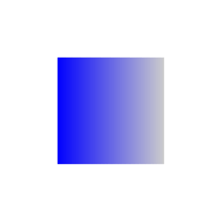

The TikZ and PGF Packages
Manual for version 3.1.10
Libraries
53 Fading Library¶
-
TikZ Library fadings ¶
\usepgflibrary{fadings} %
LaTeX
and plain
TeX
and pure pgf
\usepgflibrary[fadings] % ConTeXt and pure pgf
\usetikzlibrary{fadings} %
LaTeX
and plain
TeX
when using TikZ
\usetikzlibrary[fadings] % ConTeXt when using TikZ
The package defines a number of fadings, see Section 23
for an introduction. The
TikZ version defines special
TikZ commands for creating
fadings. These commands are explained in Section 23.
| Fading name | Example (solid blue faded on checkerboard) |
| west | |
| east |  |
| north | |
| south |

|
| circle with fuzzy edge 10 percent | |
| circle with fuzzy edge 15 percent | |
| circle with fuzzy edge 20 percent | |
| fuzzy ring 15 percent |

|